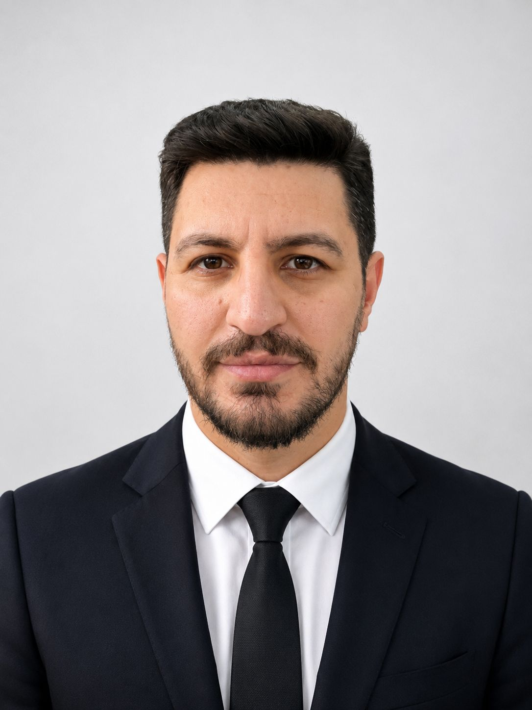

Effects of Proprioceptive Neuromuscular Facilitation-Based Reformer Pilates and Hatha Yoga on Functional Fitness, Balance, and Cognitive Performance in Older Women: A 16-Week Randomized Controlled Trial
Bratislava Medical Journal, 2026.

1997 yılında Siirt'te doğdu. Lisans eğitimini 2019 yılında Siirt Üniversitesi Beden Eğitimi ve Spor Yüksekokulu Spor Yöneticiliği Bölümünde tamamladı. Ardından Muş Alparslan Üniversitesi Sosyal Bilimler Enstitüsü Beden Eğitimi ve Spor Anabilim Dalında başladığı yüksek lisans eğitimini 2021 yılında tamamladı.
2021 yılında Muş Alparslan Üniversitesi Spor Bilimleri Fakültesi Beden Eğitimi ve Spor Bölümünde Araştırma Görevlisi olarak akademik kariyerine başladı. Aynı yıl başladığı doktora eğitimini 2025 yılında Muş Alparslan Üniversitesi Sosyal Bilimler Enstitüsü Beden Eğitimi ve Spor Anabilim Dalında tamamladı.
2021–2026 yılları arasında Muş Alparslan Üniversitesi Spor Bilimleri Fakültesinde Araştırma Görevlisi olarak görev yapan Turhan, 2026 yılından itibaren aynı fakültenin Beden Eğitimi ve Spor Bölümünde Dr. Öğr. Üyesi olarak akademik çalışmalarını sürdürmektedir.
Ulusal ve uluslararası bilimsel kongrelerde sunulan bildirileri, bilimsel makaleleri ve kitap bölümleri bulunan Turhan, spor bilimleri alanındaki araştırma, yayın ve akademik faaliyetlerine devam etmektedir.
Siirt Üniversitesi
Beden Eğitimi ve Spor Yüksekokulu
Spor Yöneticiliği
Muş Alparslan Üniversitesi
Sosyal Bilimler Enstitüsü
Beden Eğitimi ve Spor Anabilim Dalı
Muş Alparslan Üniversitesi
Spor Bilimleri Fakültesi
Muş Alparslan Üniversitesi
Sosyal Bilimler Enstitüsü
Beden Eğitimi ve Spor Anabilim Dalı
Muş Alparslan Üniversitesi
Spor Bilimleri Fakültesi
Beden Eğitimi ve Spor Bölümü
Bilimsel yayınlarımı aşağıda makaleler ve kitap bölümleri kategorilerinde inceleyebilirsiniz.
Bratislava Medical Journal, 2026.
Burdur Mehmet Akif Ersoy University Journal of Sports Sciences, 4(1), 16–28, 2026.
Frontiers in Psychology, 17:1781543, 2026.
Anadolu Kültürel Araştırmalar Dergisi, 10(2), 841–859, 2026.
Beden Eğitimi ve Spor Bilimleri Dergisi, 20(1), 186–201, 2026.
Frontiers in Psychology, 17:1781192, 2026.
Iğdır Üniversitesi Spor Bilimleri Dergisi, 9(1), 10–21, 2026.
Journal of Sport for All and Recreation, 7(2), 266–272, 2025.
Spor Bilimleri Araştırmaları-3, Özgür Yayınları, 2025.
ISBN: 978-625-5757-61-6 · ss. 19–30
Spor Bilimlerinde Aktüel Yaklaşımlar-3, Duvar Yayınevi, 2024.
ISBN: 978-625-5530-20-2 · ss. 144–159
Bilimsel makaleler, ulusal ve uluslararası yayınlar, bildiriler ve diğer akademik çalışmalar bu bölümde paylaşılacaktır.
Tüm yayınları görüntülemek için Google Scholar profilimi ziyaret edebilirsiniz.
Muhammed Özkan Turhan
Dr. Öğr. Üyesi
Muş Alparslan Üniversitesi
Spor Bilimleri Fakültesi
Beden Eğitimi ve Spor Bölümü
E-posta: muhammed.turhan@alparslan.edu.tr